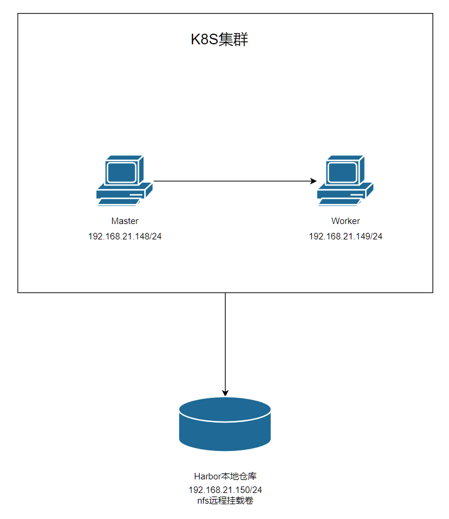
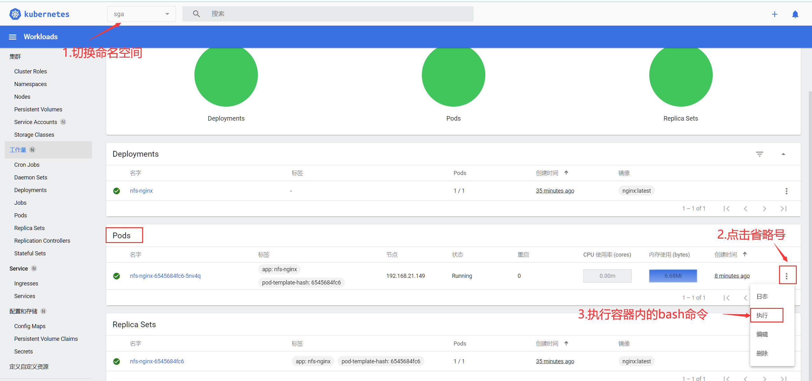
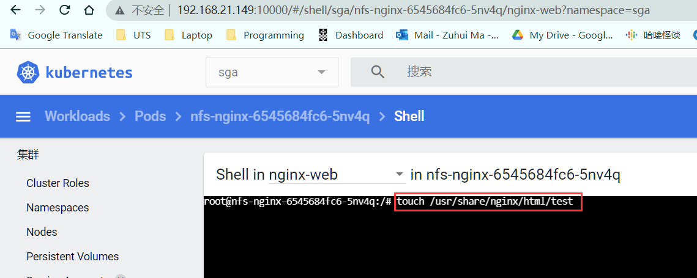
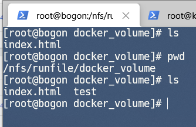
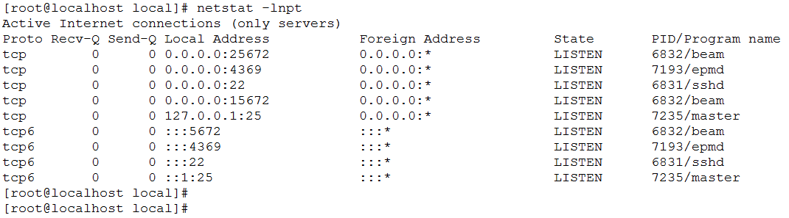
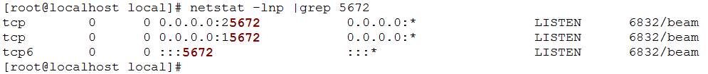
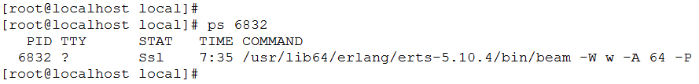

Nfs离线部署图文教程
环境
机器环境：
系统版本：Centos-7
内核版本：3.10.0-1160.el7.x86_64
K8S集群要求
master：192.168.21.148/24
worker：192.168.21.149/24
harbor&nfs：192.168.21.150/24 （本次操作的机器）
网络拓扑图

本次部署教程是基于上一篇部署教程“K8S离线安装图文教程”，假定k8s集群已经成功部署完毕，
且该集群Master节点ip为192.168.21.148/24，Worker节点ip为192.168.21.149/24。
在这次部署中，我们让nfs远程卷部署在harbor服务器上，实际操作中可以为同一网段内任意服务器。
部署流程
0 准备工作
将离线资源包传输到nfs服务器中，进入nfs文件夹内，切换到su。
判断有无安装NFS，有则可以跳过步骤一
1
| rpm -qa nfs-utils rpcbind
|
若无输出则执行步骤一
1 NFS机器上安装NFS服务器端
1.1 本地安装NFS服务
进入nfs目录，进行编译
1
| rpm -ivh *.rpm --force --nodeps
|
1.2 启动rpcbind服务
先启动rpcbind服务再启动nfs服务
1
2
3
4
5
6
7
| systemctl status rpcbind
systemctl stop rpcbind
systemctl stop nfs-utils
systemctl start rpcbind
systemctl start nfs-utils
systemctl enable rpcbind
systemctl enable nfs-utils
|
1.3 固定NFS服务端口
nfs除了主程序端口2049和rpcbind的端口111是固定以外，还会使用一些随机端口，以下配置将定义这些端口，以便配置防火墙
结尾追加端口配置
1
2
3
4
5
| MOUNTD_PORT=4001
STATD_PORT=4002
LOCKD_TCPPORT=4003
LOCKD_UDPPORT=4003
RQUOTAD_PORT=4004
|
1.4 创建共享文件夹
后面PV声明和windows挂载盘符都必须使用这个路径
1
| mkdir -p /nfs/runfile/docker_volume
|
1.5 配置NFS文件夹及策略
编辑配置文件
修改配置文件，增加下面这一行数据，指定的ip地址为客户端的地址(可以配置多个路径)
1
| /nfs/runfile/docker_volume 192.168.21.150/24(rw,sync,wdelay,hide,no_subtree_check,sec=sys,secure,root_squash,no_root_squash)
|
部署过程中192.168.21.150/24需要修改为当前机器的ip地址和网关
参数说明:
(1) Ro 该主机对该共享目录有只读权限
(2) Rw 该主机对该共享目录有读写权限
(3) Root_squash 客户机用root用户访问该共享文件夹时，将root用户映射成匿名用户
(4) No_root_squash 客户机用root访问该共享文件夹时，不映射root用户
(5) All_squash 客户机上的任何用户访问该共享目录时都映射成匿名用户
(6) Anonuid 将客户机上的用户映射成指定的本地用户ID的用户
(7) Anongid 将客户机上的用户映射成属于指定的本地用户组ID
(8) Sync 资料同步写入到内存与硬盘中
(9) Async 资料会先暂存于内存中，而非直接写入硬盘
(10) Insecure 允许从这台机器过来的非授权访问
(11) subtree_check 如果共享/usr/bin之类的子目录时，强制NFS检查父目录的权限（默认）
(12) no_subtree_check 和上面相对，不检查父目录权限
(13) wdelay 如果多个用户要写入NFS目录，则归组写入（默认）
(14 )no_wdelay 如果多个用户要写入NFS目录，则立即写入，当使用async时，无需此设置。
(15) hide 在NFS共享目录中不共享其子目录
(16) no_hide 共享NFS目录的子目录
(17) secure NFS通过1024以下的安全TCP/IP端口发送
(18) insecure NFS通过1024以上的端口发送
1.6 修改共享文件夹权限
1
| chmod 777 -R /nfs/runfile/docker_volume
|
1.7 配置生效并设置自启动
1
2
3
4
5
6
7
8
9
10
11
12
| rpc.nfsd 8
rpc.mountd
exportfs -r
exportfs
systemctl restart nfs-config
systemctl restart nfs-idmap
systemctl restart nfs-lock
systemctl restart nfs-server
systemctl enable nfs-config
systemctl enable nfs-idmap
systemctl enable nfs-lock
systemctl enable nfs-server
|
1.8 查看nfs所需端口和共享网段
查看开放的共享文件夹和可见网段
1
| showmount -e 192.168.21.150
|
查看端口
输出如下：
1
2
3
4
5
6
7
8
9
10
11
12
13
14
15
16
17
18
19
20
21
22
23
| program vers proto port service
100000 4 tcp 111 portmapper
100000 3 tcp 111 portmapper
100000 2 tcp 111 portmapper
100000 4 udp 111 portmapper
100000 3 udp 111 portmapper
100000 2 udp 111 portmapper
100024 1 udp 4002 status
100024 1 tcp 4002 status
100005 1 udp 4001 mountd
100005 2 udp 4001 mountd
100005 3 udp 4001 mountd
100003 3 tcp 2049 nfs
100003 4 tcp 2049 nfs
100227 3 tcp 2049 nfs_acl
100003 3 udp 2049 nfs
100227 3 udp 2049 nfs_acl
100021 1 udp 4003 nlockmgr
100021 3 udp 4003 nlockmgr
100021 4 udp 4003 nlockmgr
100021 1 tcp 4003 nlockmgr
100021 3 tcp 4003 nlockmgr
100021 4 tcp 4003 nlockmgr
|
开放相应的端口
1
2
3
4
5
6
7
8
9
10
11
| firewall-cmd --zone=public --add-port=111/tcp --permanent
firewall-cmd --zone=public --add-port=111/udp --permanent
firewall-cmd --zone=public --add-port=4002/tcp --permanent
firewall-cmd --zone=public --add-port=4002/udp --permanent
firewall-cmd --zone=public --add-port=4001/tcp --permanent
firewall-cmd --zone=public --add-port=4001/udp --permanent
firewall-cmd --zone=public --add-port=2049/tcp --permanent
firewall-cmd --zone=public --add-port=2049/udp --permanent
firewall-cmd --zone=public --add-port=4003/tcp --permanent
firewall-cmd --zone=public --add-port=4003/udp --permanent
firewall-cmd --reload
|
2 NFS客户机上安装NFS客户端
2.1 安装NFS服务
1
2
3
4
5
6
7
| rpm -ivh *.rpm --force --nodeps
systemctl stop rpcbind
systemctl stop nfs-utils
systemctl start rpcbind
systemctl start nfs-utils
systemctl enable rpcbind
systemctl enable nfs-utils
|
2.2 查看NFS服务使用端口并开放防火墙
查看端口使用
输出
1
2
3
4
5
6
7
| program vers proto port service
100000 4 tcp 111 portmapper
100000 3 tcp 111 portmapper
100000 2 tcp 111 portmapper
100000 4 udp 111 portmapper
100000 3 udp 111 portmapper
100000 2 udp 111 portmapper
|
开放防火墙
1
2
3
| firewall-cmd --zone=public --add-port=111/tcp --permanent
firewall-cmd --zone=public --add-port=111/udp --permanent
firewall-cmd --reload
|
3 验证NFS服务
3.1 验证读取权限
k8s集群机器上执行以下命令，新建命名空间sga
1
| kubectl create namespace sga
|
切换到命名空间sga中，添加以下yaml命令启动一个使用nfs服务的nginx
1
2
3
4
5
6
7
8
9
10
11
12
13
14
15
16
17
18
19
20
21
22
23
24
25
26
27
28
29
30
31
32
33
34
35
36
37
38
39
40
41
42
43
44
45
46
47
48
49
50
51
52
53
54
55
56
57
58
59
60
61
62
63
64
65
66
67
68
69
70
71
72
73
74
75
76
77
78
79
80
| apiVersion: v1
kind: PersistentVolume
metadata:
name: nfs-pv
namespace: sga
labels:
pv: nfs-pv
spec:
capacity:
storage: 100Mi
accessModes:
- ReadWriteMany
persistentVolumeReclaimPolicy: Retain
storageClassName: nfs
nfs:
server: 192.168.21.150
path: "/nfs/runfile/docker_volume"
---
apiVersion: v1
kind: PersistentVolumeClaim
metadata:
name: nfs-pvc
namespace: sga
spec:
storageClassName: nfs
accessModes:
- ReadWriteMany
resources:
requests:
storage: 50Mi
selector:
matchLabels:
pv: nfs-pv
---
apiVersion: apps/v1
kind: Deployment
metadata:
name: nfs-nginx
namespace: sga
spec:
selector:
matchLabels:
app: nfs-nginx
replicas: 2
template:
metadata:
labels:
app: nfs-nginx
spec:
containers:
- name: nginx-web
image: nginx:latest
ports:
- containerPort: 80
volumeMounts:
- mountPath: /usr/share/nginx/html
name: html
volumes:
- name: html
persistentVolumeClaim:
claimName: nfs-pvc
---
apiVersion: v1
kind: Service
metadata:
name: nfs-nginx
namespace: sga
labels:
app: nfs-nginx
spec:
type: NodePort
ports:
- port: 80
protocol: TCP
targetPort: 80
nodePort: 8404
selector:
app: nfs-nginx
|
切换到NFS服务器上，新建一个index.html文件
1
| vi /nfs/runfile/docker_volume/index.html
|
添加以下内容
1
2
3
4
5
6
7
8
9
10
11
| <html lang="en">
<head>
<meta charset="UTF-8">
<meta http-equiv="X-UA-Compatible" content="IE=edge">
<meta name="viewport" content="width=device-width, initial-scale=1.0">
<title>Document</title>
</head>
<body>
nfs挂载成功
</body>
</html>
|
重启此pod，访问 192.168.21.148:8404，看到如下页面则读取远程挂载卷成功。

3.2 验证写入权限
使用dashboard进入sga命名空间中，找到正在运行的pod，执行其bash。

进入终端后在远程挂载目录上随意创建一个文件
1
| touch /usr/share/nginx/html/test
|

在NFS服务器上查看文件，发现新创建的test文件，则写入权限没问题

4 防火墙及进程相关命令
4.1 开放端口
firewall-cmd –zone=public –add-port=5672/tcp –permanent # 开放5672端口
firewall-cmd –zone=public –remove-port=5672/tcp –permanent #关闭5672端口
firewall-cmd –reload # 配置立即生效
4.2 查看防火墙所有开放的端口
firewall-cmd –zone=public –list-ports
4.3 关闭防火墙
如果要开放的端口太多，嫌麻烦，可以关闭防火墙，安全性自行评估
systemctl stop firewalld.service
4.4 查看防火墙状态
firewall-cmd –state
4.5 查看监听的端口
netstat -lnpt

PS:centos7默认没有 netstat 命令，需要安装 net-tools 工具，yum install -y net-tools
4.6 检查端口被哪个进程占用
netstat -lnpt |grep 5672

4.7 查看进程的详细信息
ps 6832

4.8 中止进程
kill -9 6832